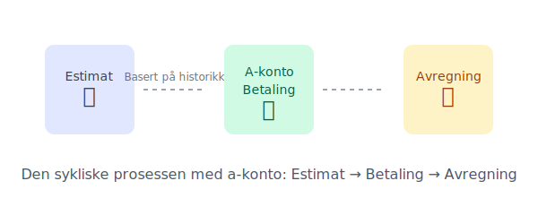

A-konto, en forkortelse for à conto, er et italiensk begrep som betyr “på regning”. I praksis er en a-konto betaling en delinnbetaling for en vare eller tjeneste hvor den endelige prisen ennå ikke er kjent. Man betaler et avdrag basert på et estimat, og en endelig avregning skjer senere.
Tenk på det som et forskudd som jevner ut kostnader over tid, slik at du unngår store, uforutsigbare regninger.
Hvordan fungerer a-konto i praksis?
A-konto baserer seg på et estimat av fremtidig forbruk eller kostnad. Leverandøren ser vanligvis på tidligere perioders forbruk eller en standardisert modell for å beregne et fornuftig beløp. Dette beløpet faktureres jevnlig, for eksempel månedlig eller kvartalsvis.
Når den faktiske kostnaden er klar, gjøres en avregning.
- Har du betalt for mye? Du mottar en kreditnota eller får penger tilbake.
- Har du betalt for lite? Du mottar en restfaktura for det gjenstående beløpet.

Når brukes a-konto?
A-konto er mest utbredt i situasjoner der det er vanskelig å fastsette en nøyaktig pris på forhånd. Her er noen typiske eksempler:
1. Strømregninger
Dette er det vanligste eksempelet. Strømforbruket ditt varierer gjennom året, med høyere forbruk om vinteren. For å unngå sjokkfakturaer, estimerer strømselskapet ditt årlige forbruk og deler det på 12 måneder. Du betaler en fast sum hver måned (a-konto), og ved jevne mellomrom leses måleren av for å avregne det faktiske forbruket.
2. Entreprenør- og byggeprosjekter
Ved større byggeprosjekter kan det være usikkerhet knyttet til endelig timebruk og materialkostnader. Kunden betaler ofte avdrag (a-konto) basert på prosjektets fremdrift. Dette sikrer likviditet for entreprenøren og fordeler kostnaden for kunden.
3. Husleie med felleskostnader
I noen leieforhold, spesielt i borettslag og sameier, kan felleskostnader som oppvarming, vann og internett være inkludert i en a-konto-post i husleien. Kostnadene blir så avregnet en gang i året basert på det reelle forbruket.
Fordeler og ulemper med a-konto
| Fordeler | Ulemper |
|---|---|
| Forutsigbarhet: Jevne og stabile utgifter | Utsatt nøyaktighet: Endelig pris er ukjent |
| Bedre likviditet: Unngår store engangsbeløp | Kan føre til restbeløp: Krever god budsjettering |
| Enklere budsjettering: Lettere å planlegge økonomien | Mindre transparens: Krever tillit til leverandøren |
A-konto og regnskap
For bedrifter er det viktig å håndtere a-konto korrekt i regnskapet. En a-kontofaktura representerer en forskuddsbetaling og skal i utgangspunktet ikke føres som en kostnad før den endelige fakturaen med avregning foreligger.
For de fleste bedrifter som mottar elektroniske fakturaer, vil en EHF-faktura ofte være involvert i denne prosessen, noe som forenkler håndteringen.
Automatisering av A-konto Betalinger
For å gjøre a-konto betalinger enda mer praktiske, kan de automatiseres gjennom AvtaleGiro. Dette er spesielt nyttig for:
Regelmessige A-konto Betalinger
- Strømregninger: Månedlige a-konto beløp trekkes automatisk
- Felleskostnader: Husleie med inkluderte a-konto poster
- Forsikringer: Månedlige premier basert på estimert risiko
Fordeler med AvtaleGiro for A-konto
- Ingen glemte betalinger: Automatisk trekk på forfallsdato
- Tidsbesparelse: Slipper manuell behandling hver måned
- Bedre oversikt: Enkelt å følge med på betalinger i nettbank
Ved å kombinere a-konto systemet med AvtaleGiro får du maksimal forutsigbarhet og bekvemmelighet i betalingsrutinene.
A-konto vs. Forskuddsbetaling
Selv om både a-konto og forskuddsbetaling innebærer betaling før endelig levering, er det viktige forskjeller:
| Aspekt | A-konto | Forskuddsbetaling |
|---|---|---|
| Formål | Jevne ut kostnader over tid | Sikre betaling før levering |
| Pris | Ukjent endelig pris | Ofte kjent pris på forhånd |
| Avregning | Regelmessig avregning | Ingen avregning nødvendig |
| Risiko | Lav risiko for begge parter | Høyere risiko for kjøper |
| Bruksområde | Løpende tjenester | Engangskjøp eller prosjekter |
A-konto brukes når den endelige prisen er ukjent og det er behov for jevnlig avregning, mens forskuddsbetaling brukes når man ønsker full betaling før levering av en vare eller tjeneste med kjent pris.
Oppsummering
A-konto er en praktisk betalingsmodell som skaper økonomisk forutsigbarhet for både leverandør og kunde. Ved å betale et estimert beløp jevnlig, unngår man store og uventede regninger. Nøkkelen ligger i den endelige avregningen, som sikrer at du kun betaler for det du faktisk har brukt.